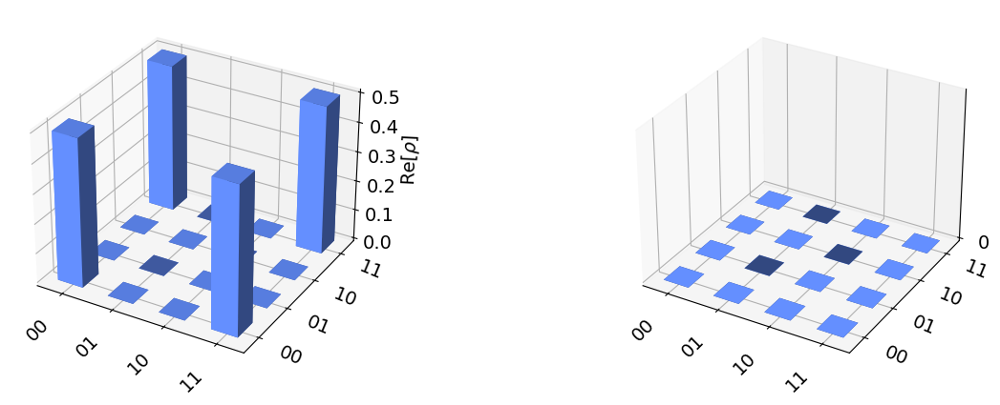

How-to: run circuit on Braket local backend¶
This notebook demonstrates running a quantum circuit on the local Braket backend using the Qiskit Braket Provider. It shows the process of defining the backend, creating a simple quantum circuit, running the circuit, and retrieving results.
First let’s create a circuit for a Bell state.
[24]:
from qiskit import QuantumCircuit
from qiskit.visualization import plot_histogram, plot_state_city
from qiskit_braket_provider import BraketLocalBackend
# Create a Local Backend
backend = BraketLocalBackend(name="default")
# Create a simple circuit
circuit = QuantumCircuit(2)
circuit.h(0)
circuit.cx(0, 1)
[24]:
<qiskit.circuit.instructionset.InstructionSet at 0x7f13961fd9c0>
Then we can run the circuit for shots times like we do in AWS backends: the difference is that the simulation is running on your computer.
[6]:
result = backend.run(circuit, shots=2000).result()
plot_histogram(result.get_counts())
[6]:

Setting shots=0 we are able to get the exact resulting state vector.
[17]:
result = backend.run(circuit, shots=0).result()
plot_state_city(result.get_statevector())
[17]:
